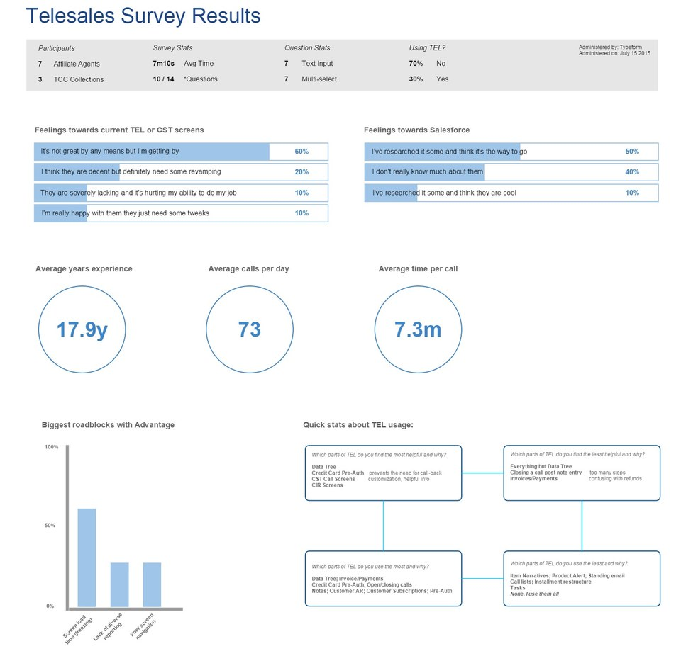
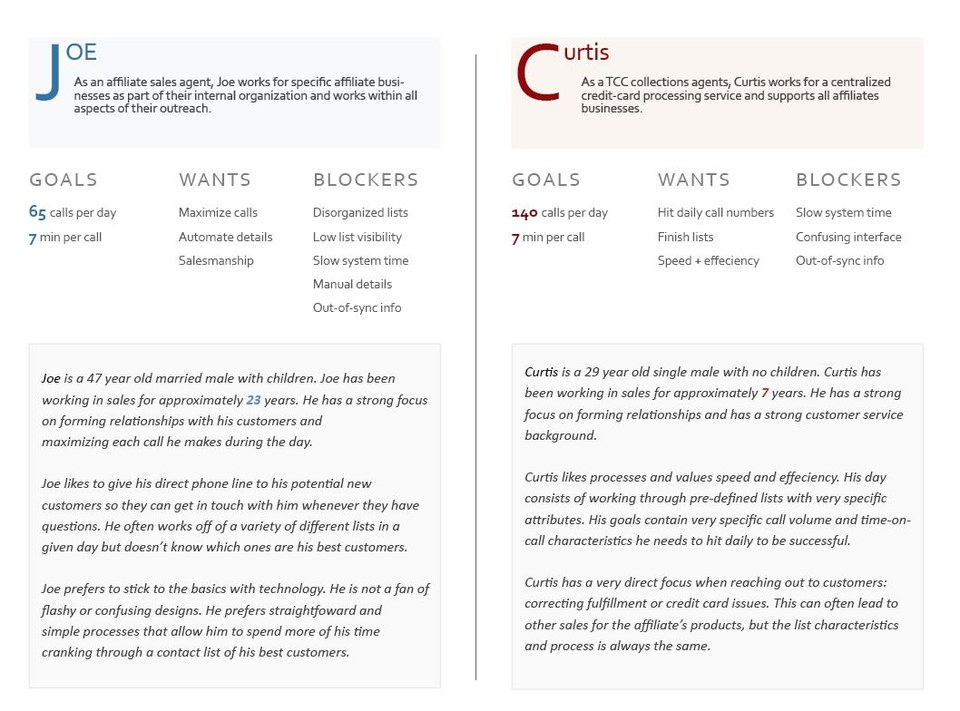
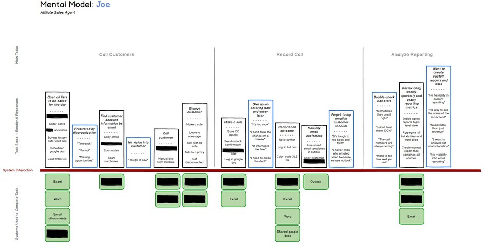

When tasked with designing a new Telesales portal into our CRM system from the ground-up, I started with some basic surveys work to get a feel for our groups baseline statistics.
Personas developed for the same Telesales portal project to help our teams focus on the people who would use our product.
Because our sales team members were working in up to five systems in a given day, this mental model diagram helped us understand which tasks required the most system work so we could attempt to cut logins if possible.
